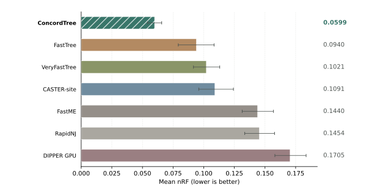
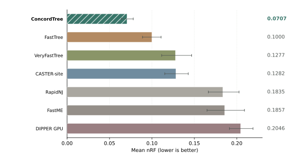
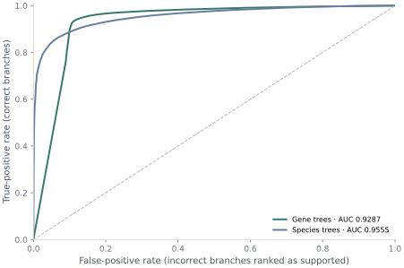

Technical report V1.0.2
Accuracy
ConcordTree species results rerun on 8 November 2026 with K2P-gamma AP-NJ initialization, matching the gene setting. The 200 unchanged gene results and historical comparator accuracy measurements are reused; the separate DIPPER GPU timing rerun does not replace these topology results. These datasets have been used during development.
01
Gene-tree topology


02
Gene-tree branch lengths
Mean NMAE on each method’s correctly recovered internal branches, averaged across alignments. Lower is better.

03
Species-tree topology
Simple


Complex


04
Empirical data
| Dataset | ConcordTree nRF | FastTree nRF | CASTER-site nRF | DIPPER nRF |
|---|---|---|---|---|
| Oakleaf butterflies | 0.0571 | — | 0.0286 | 0.6970 |
| 1KP plants | 0.1123 | 0.0979 | 0.2613 | 0.9222 |
| Papilionoid · plastid | 0.0456 | 0.0207 | 0.0705 | 0.2479 |
| Fish · UCE | 0.0625 | 0.0625 | 0.1562 | 0.7097 |
| Bembidion insects | 0.1163 | 0.1163 | 0.1163 | 0.5581 |
| Mammals | 0.0168 | 0.0000 | 0.0126 | 0.0420 |
| Ruminants | 0.0408 | 0.0000 | 0.0408 | 0.4845 |
| Placental mammals | 0.1519 | 0.1519 | 0.1392 | 1.0000 |
| Sigmodontinae | 0.1228 | 0.0175 | 0.1404 | 0.8641 |
| Wolbachia | 0.0333 | 0.0000 | 0.1667 | 1.0000 |
| Mean nRF | 0.0760 | 0.0519 | 0.1133 | 0.6526 |
05
Branch-support analysis


| Task | Pooled AUC [95% CI] | Coverage at display ≥95 | Correctness at display ≥95 |
|---|---|---|---|
| Gene | 0.9343 [0.8824, 0.9763] | 92.35% | 99.63% |
| Species | 0.9563 [0.9539, 0.9587] | 18.81% | 99.99% |
AP-NJ
JC to K2P-gamma
Lower nRF is better. Only the species initializer distance changed; all paired final results, including regressions, are retained. Empirical distances use published reference topologies.
| Species panel | Inputs | JC mean nRF | K2P-gamma mean nRF | Better / tied / worse |
|---|---|---|---|---|
| Simulations | 700 | 0.0668 | 0.0653 | 158 / 450 / 92 |
| Empirical concatenations | 10 | 0.0800 | 0.0760 | 2 / 8 / 0 |
| Original-locus appendix | 7 | 0.0861 | 0.0856 | 1 / 6 / 0 |